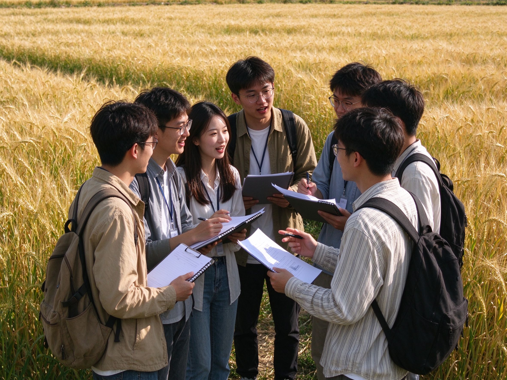

青稞计划三年发展目标
50
帮扶项目（个）
30
创业导师（位）
15
共建伙伴（家）
100
带动就业（人）
帮扶体系
四位一体，陪你把根扎稳
围绕大学生创业最常见的四个缺口——钱、方法、场地、通道，青稞计划搭建一站式支持体系。
资金资助
青稞种子基金为入选项目提供启动资金，按里程碑分期拨付，覆盖注册、研发、试产等关键环节。
培训与导师辅导
创业训练营体系化课程，叠加一对一导师长期陪跑，覆盖商业模式、财务、法务与市场。
场地与孵化资源
共享办公工位、会议室与路演厅，配套基础行政服务与产业链资源对接，降低起步成本。
政策与资源对接
协助申报创业补贴与担保贷款，定期组织投融资路演与产业对接，把机会送到项目面前。

关于计划
扎根，是青稞生长的第一步
青稞耐寒耐旱，能在贫瘠与高原上深深扎根。我们把这份坚韧写进计划的名字，也写进帮扶的每一步——从一颗种子开始，先帮助创业者把根扎稳，再谈长高与结果。
- 个人发起、政校企共建的开放平台
- 资金 + 培训 + 场地 + 政策四位一体
- 陪伴式、分阶段的长期帮扶
发展路径
三年三步，把模式做扎实
先试点、后扩面、再品牌化，稳步推进，每一步都先解决当下最关键的问题。
-
第一阶段 · 0–6 个月
筹备与试点
完成制度设计与核心团队组建，建立青稞导师团，首批试点项目落地验证帮扶机制。
-
第二阶段 · 6–18 个月
扩面与机制化
扩大项目招募规模，固化遴选、资助与退出机制，政校企共建伙伴稳步扩容。
-
第三阶段 · 18–36 个月
平台化与品牌化
形成可复制、可持续的帮扶模式，建立品牌影响力，探索自我造血与校友网络联动。
最新动态
青稞计划的每一步
总体方案正式发布
《青稞计划总体方案 V1.0》发布，四位一体帮扶体系与三阶段实施规划正式落地。
2026 年 10 月
首批项目公开招募
首批创业项目招募启动，计划支持 10 个种子项目，报名通道已开启。
2026 年 10 月
共建洽谈持续推进
与地方政府、高校及企业的共建洽谈持续推进，三方合作机制逐步成型。
进行中